WS19 — Ego Ko Kaise Chhodein?
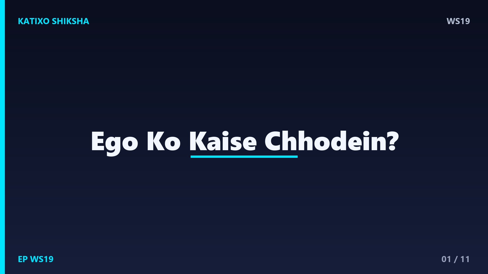
Slide 1दोस्तों, एक सवाल — क्या तुमने कभी किसी रिश्ते को सिर्फ़ इसलिए टूटते देखा है क्योंकि कोई पहले sorry बोलने को तैयार नहीं था? या किसी ने तुम्हें सही सलाह दी, पर तुमने सिर्फ़ इसलिए नहीं मानी क्योंकि तुम्हारा ego आड़े आ गया? ये है Katixo KhojLab, और आज की कहानी है उस अदृश्य दीवार के बारे में जो हमें सबसे अलग कर देती है — ego. चलो आज एक कहानी से सीखते हैं कि ego को कैसे छोड़ें।
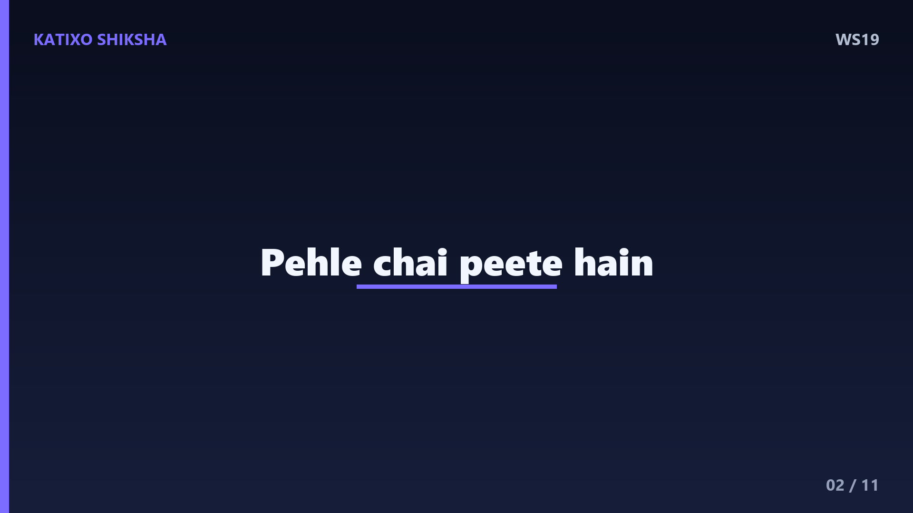
Slide 2एक बार एक बहुत बड़ा विद्वान एक मशहूर ज़ेन गुरु के पास गया। वो बोला — मैंने सारे ग्रंथ पढ़े हैं, मुझे सब कुछ आता है, बस मुझे ज्ञान की आखिरी बात सिखा दीजिए। गुरु मुस्कुराए और बोले — पहले चाय पीते हैं। उन्होंने एक प्याली में चाय डालनी शुरू की। प्याली भर गई, पर गुरु डालते रहे। चाय बाहर गिरने लगी। विद्वान चिल्लाया — रुकिए! प्याली भर चुकी है, अब और नहीं समाएगा।
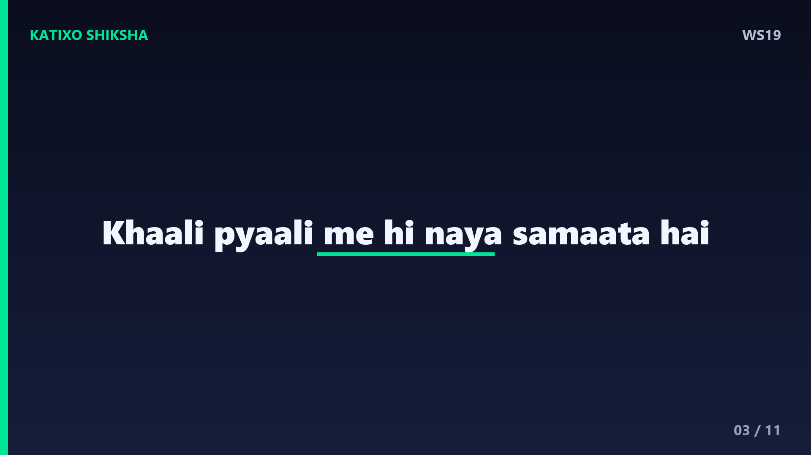
Slide 3गुरु शांति से बोले — बिल्कुल सही कहा तुमने। तुम भी इस प्याली की तरह हो। तुम्हारा दिमाग पहले से अपने ज्ञान, अपने ego से भरा हुआ है। जब तक तुम इसे खाली नहीं करोगे, मैं इसमें कुछ नया कैसे डालूँ? सच्चा ज्ञान वहीं आता है जहाँ खाली जगह होती है। विद्वान को उस दिन सबसे बड़ी सीख मिली — सीखने के लिए पहले खुद को खाली करना पड़ता है।
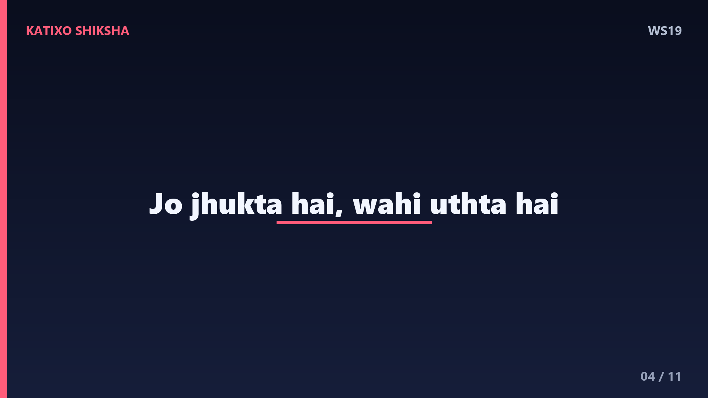
Slide 4Lesson नंबर एक — ego तुम्हारी growth का सबसे बड़ा दुश्मन है। जब तुम सोचते हो मुझे सब आता है, उसी पल तुम्हारा सीखना रुक जाता है। एक बहुत प्यारी बात है — जो झुकता है, वही ऊँचा उठता है। जैसे फल से लदा पेड़ झुक जाता है, वैसे ही असली ज्ञानी इंसान विनम्र होता है। Ego तुम्हें बड़ा महसूस कराता है, पर असल में वो तुम्हें छोटा बना देता है।
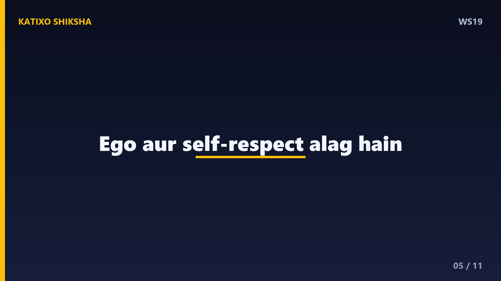
Slide 5Lesson नंबर दो — ego और self-respect में फ़र्क समझो। Self-respect कहता है — मैं अपनी value जानता हूँ। Ego कहता है — मैं तुमसे बेहतर हूँ। Self-respect तुम्हें शांत रखता है, ego तुम्हें हमेशा defend करने पर मजबूर करता है। जब कोई तुम्हारी आलोचना करे और तुम्हारा खून खौल जाए — वो ego है। जब तुम शांति से सुनो और सीखो — वो परिपक्वता है। ये फ़र्क पहचानना ही पहला कदम है।
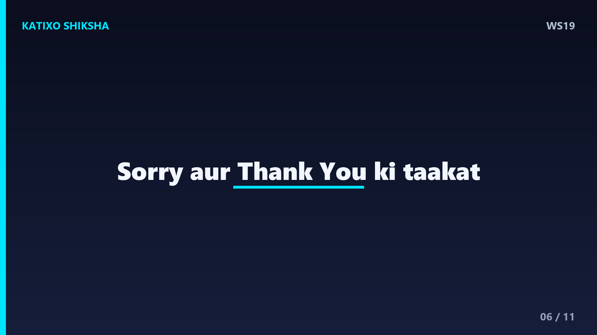
Slide 6अब एक practical technique — इसे कहते हैं sorry और thank you की ताक़त. Ego इन दो शब्दों से सबसे ज़्यादा डरता है। जब तुम दिल से sorry बोलते हो, तो तुम किसी से हारते नहीं — तुम रिश्ते को जिताते हो। और जब तुम thank you बोलते हो, तो तुम मानते हो कि तुम अकेले नहीं, दूसरों की मदद से आगे बढ़े हो। आज ही किसी से ईमानदारी से ये दो शब्द बोलकर देखो — तुम्हें फ़र्क महसूस होगा।
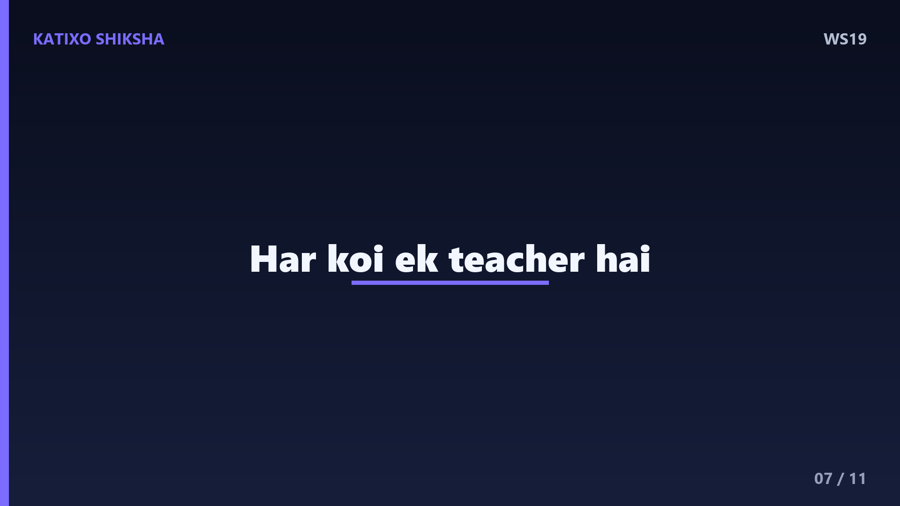
Slide 7Technique नंबर दो — दूसरों से सीखने की आदत डालो. हर इंसान, चाहे वो तुमसे छोटा हो या कम पढ़ा-लिखा, तुम्हें कुछ न कुछ सिखा सकता है। जब कोई बात करे, तो जवाब देने के लिए नहीं, समझने के लिए सुनो। एक सवाल खुद से पूछो — इस इंसान से मैं क्या सीख सकता हूँ? जिस दिन तुम हर किसी को teacher की तरह देखोगे, उस दिन तुम्हारा ego अपने आप छोटा होने लगेगा।
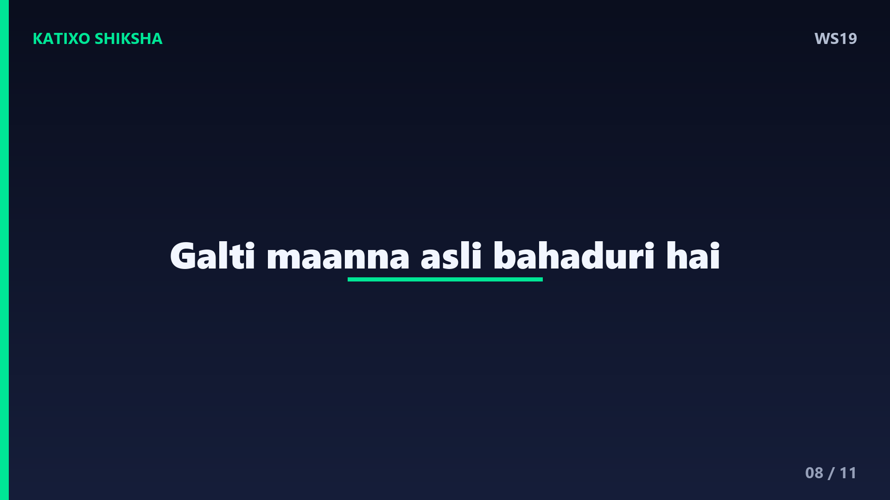
Slide 8एक ज़रूरी बात — गलती मान लेना कमज़ोरी नहीं, ताक़त है। Ego कहता है — मैं कभी गलत नहीं हो सकता। पर सच ये है कि जो इंसान अपनी गलती मान लेता है, वो सबसे मज़बूत होता है, क्योंकि वो सच से नहीं डरता। याद रखो, माफ़ी माँगने वाला छोटा नहीं होता, बल्कि उसका दिल बड़ा होता है। अपनी गलती मानना ही असली बहादुरी है।
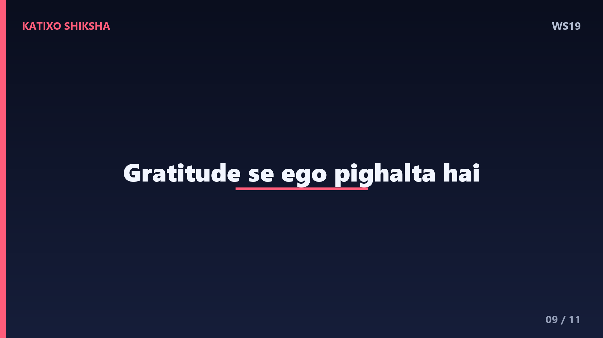
Slide 9दोस्तों, ego को छोड़ने का एक खूबसूरत रास्ता है — gratitude. जब तुम ये याद करते हो कि तुम्हारी हर सफलता में किसी न किसी का हाथ रहा है — माँ-बाप, teacher, दोस्त, यहाँ तक कि अजनबी — तो ego अपने आप पिघल जाता है। रोज़ रात को तीन चीज़ों के लिए शुक्रिया कहो जो दूसरों ने तुम्हारे लिए कीं। ये छोटी सी आदत तुम्हारे दिल को विनम्र और हल्का बना देगी।
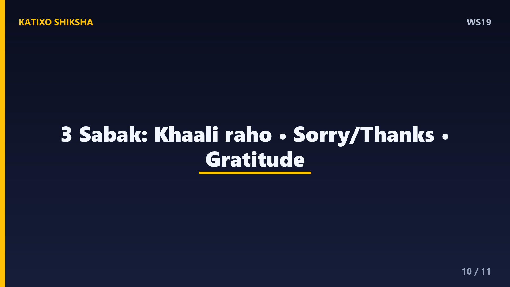
Slide 10चलो आज की तीन सबसे बड़ी सीख याद कर लें। पहली — ego तुम्हारी growth का दुश्मन है, खुद को खाली प्याली की तरह रखो ताकि नया सीख सको। दूसरी — sorry और thank you बोलना कमज़ोरी नहीं, सबसे बड़ी ताक़त है। और तीसरी — हर इंसान को teacher समझो और gratitude से अपने ego को पिघलने दो। ये तीन चीज़ें तुम्हारे रिश्ते और तुम्हारा जीवन दोनों बदल देंगी।
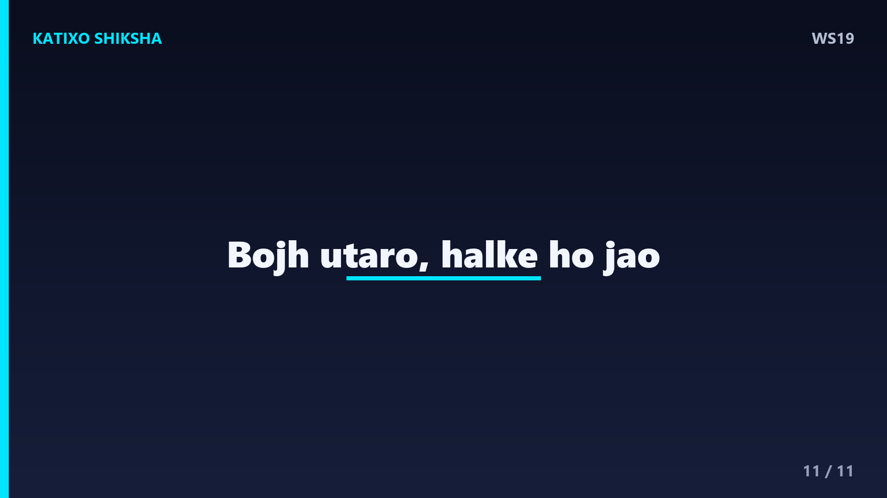
Slide 11दोस्तों, याद रखना — ego एक भारी बोझ है जिसे हम बिना वजह उठाए घूमते हैं। जिस दिन तुम इसे नीचे रख दोगे, तुम महसूस करोगे कितनी हल्की और खूबसूरत है ज़िंदगी। विनम्रता कमज़ोरी नहीं, सबसे बड़ी ताक़त है। आज से एक छोटा सा कदम उठाओ — किसी एक इंसान के सामने थोड़ा झुको, और देखो कैसे दिल जुड़ जाते हैं। Like, share, aur Katixo KhojLab ko subscribe karna mat bhoolna. Milte hain agli kahani mein!